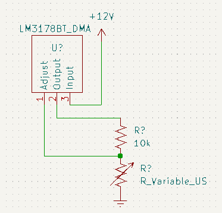
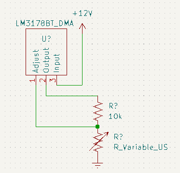

Schematic Capture
Introduction
Resources
- LM3178 (On Digikey | datasheet)
- Symbol Creation Tutorial
- KiCad.org
- KiCad Documentation
Steps
-
Open KiCad
-
Create a new project (File–>New Project)
Create a New Project -
Give the project a unique name with date or version number
 Assign a Name to the Project
Assign a Name to the Project -
Select the schematic and double click it to open
 Open the Schematic
Open the Schematic -
Add a Part
Add a Part -
If this is the first time running the symbol editor, you will be asked to configure the global symbol library table. Select the default option.
Configure the Library Table -
Select the library and part you created in the “Symbol Creation” tutorial.
-
You can move the symbol around the screen. Left click to place it
-
Open the datasheet for reference. What is the acceptable range of input voltage?
-
Add a power port for 12V. Select “Add power port” from the right side tools (the add power port button is the ground symbol icon) or type “p”.
-
Search or browse for “12V”. Select it, select okay.
 Select 12V
Select 12V -
Drag the symbol around
-
-
Repeat the last step, this time adding “GND”
 Select Ground
Select Ground -
Look at the “basic” example in the datasheet (Figure 6). You will need to add resistor(s).
-
Open the add part menu by pressing the “a” key or by selecting the “Add part” icon from the toolbar on the right(the op-amp symbol). Add a part and search for “R_US” or “resistor”. Select the “R_US” part that comes up.
_KiCad’s default resistor follows a different standard than the US standard resistor. Whenever possible select the “US” version of parts, including “C_US”, “C_Polarized_US”, “R_Potentiometer_US”, etc.
Search for “Resistor US” -
Select the R_US text in the part that you place. Replace the text with the value of the resistor in Ohms. You can use “10k” or “10kOhm” to denote kilo-Ohms, just be consistent. (Note, this value is just a dummy value, you will need to select your own resistance)
 Select R_US
Select R_US Assign a ValueThe value is displayed
Assign a ValueThe value is displayed -
Repeat the last two steps, this time adding “Resistor_Variable_US”. Select the “R_Variable_US” part that comes up and replace the text with the value of the resistor in Ohms. You can use “10k” or “10kOhm” to denote kilo-Ohms, just be consistent. (Note, this value is just a dummy value, you will need to select your own resistance)
 Select Resistor_Variable_USUpdate the Value
Select Resistor_Variable_USUpdate the Value The updated value is displayed
The updated value is displayed -
Arrange your parts on the page using the move command.
- Placing your cursor over a part, you can simply type “M” on your keyboard, or right click and select “Move”
- Move your cursor to where you’d like to place the part and left click to accept.
- Repeat as needed.
-
Wire your parts together
-
placing your cursor over one of the circular “ports” by each symbol, type “W”
or you can also select the wire tool from the right side of the page
or you can left click any unwired port to activate the wire tool.


 

-
-
Number your parts
Reference designators are the text fields by each symbol that uniquely identify the individual part on the schematic (Initially they may say R?, U?, etc). Each part must have a unique reference designator. If you are aiming to maintain consistency with an existing schematic, attempting to use the same reference designators as a reference circuit diagram, etc, it may make sense for you to manually number your parts.
-
To manually number your parts, simply click the desired reference designator and assign it a unique ID, typically a capital letter followed by a number
- resistors typically look like “R1”, “R2”, etc.
- capacitors typically look like “C1”, “C2”, etc.
- other devicds often look like “U1”, “U2”, etc.
- …for more information search for reference designator conventions in the KiCad documentation or on Google.
-
To automatically number your parts, go to Tools –> annotate schematic in the menu
 Annotation Tool
Annotation Tool-
when the window opens, it will give you a number of options.
- You can choose whether to number top-to-bottom first or left-to-right first.
- You can also choose whether to keep existing annotations (reference designators) and only assign unassigned parts, or to renumber everything.
- You can also choose to annotate a selection, a current sheet, or the entire project
- …there are other options that you can read more about in KiCad’s documentation.
-
Accept the options you have selected, and you should see that the chosen parts now have a unique reference designator assigned to them.


-
-
-
Save your schematic.
{kind=link}
{kind=link}
{kind=link}
{kind=link}
{kind=link}
{kind=link}
{kind=link}